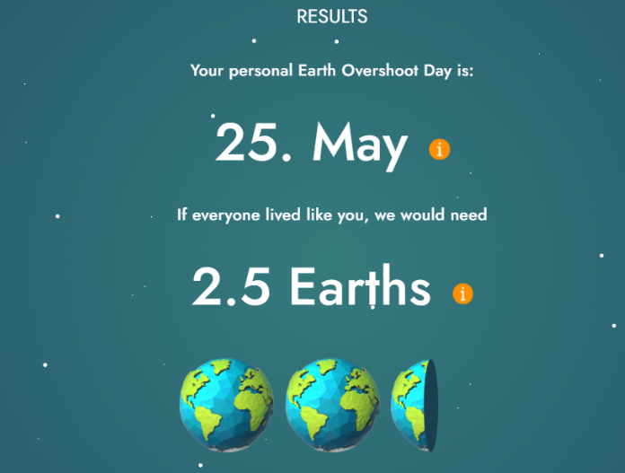
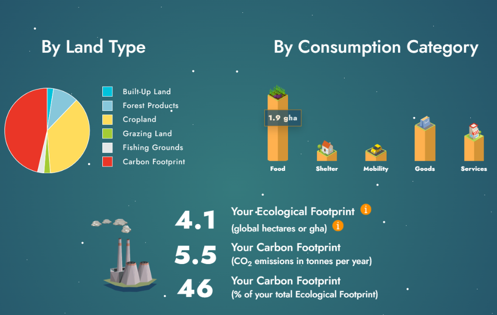

WHAT IS MY
Carbon
Footprint?
A simple look at my Earth Overshoot Day, my footprint, and what my lifestyle means for our planet.
Nazer O. Soguilon
Section I101
EXPLORE MY RESULTS →
SCROLL TO EXPLORE
MY RESULTS
What the calculator showed me
The results below came from my Carbon Footprint Calculator activity.
01
Screenshot of my results
Replace the two image placeholders below with your actual screenshots.


These are the actual result screenshots used for this presentation.
IF EVERYONE LIVED LIKE ME
2.5 EARTHS
🌎
🌎
🌎
This result surprised me because my lifestyle would need more than one Earth if everyone lived the same way.
BIGGEST CATEGORY
Food
Food is my biggest consumption category in the result.
MY PERSONAL REACTION
I was surprised by my result.
“
I was surprised by my results. My score says that if everyone lived like me, we would need 2.5 Earths.
I did not think my lifestyle would have this much effect on the Earth. It made me think about my daily habits.
My 5.5 tonnes of CO₂ also shows that my choices can affect the environment. I think I should pay more attention to the things I use and the things I waste.
MY DAY
25
MAY
EARTH OVERSHOOT DAY
May 25
This shows that I use many natural resources in my daily life. My lifestyle has an environmental impact, so I need to make better choices.
MY NEXT STEPS
Small actions can help.
I cannot change everything at once, but I can start with simple habits.
01
Avoid food waste
Take only what I can eat and avoid throwing food away.
02
Save electricity
Turn off lights and devices when I do not need them.
03
Use less water
Be careful with water during everyday activities.
04
Avoid unnecessary things
Think before buying or using something I do not really need.
MY TAKEAWAY
I need to be more careful with my daily choices.
My actions may be small, but they can still make a difference.
BACK TO TOP ↑